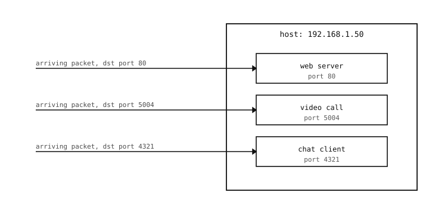

9.8. Portit¶
IP-osoite kertoo, mille isännälle paketti on tarkoitettu. Nykyaikainen isäntä ajaa monta ohjelmaa yhtä aikaa – selainta, chat-asiakasta, videopuhelua, varmuuskopiointitehtävää – ja jokainen niistä lähettää ja vastaanottaa paketteja rinnakkain. IP-kerroksella ei ole keinoa erottaa niitä toisistaan; se vain ojentaa jokaisen saapuvan paketin ”isännälle”. Jonkin on päätettävä, mikä paketti kuuluu millekin ohjelmalle.
Porttinumero on vastaus. Jokainen paketti kuljetuskerroksella sisältää kaksi ylimääräistä kenttää IP-otsikon lisäksi: lähdeportin ja kohdeportin. Kumpikin on 16-bittinen kokonaisluku, joten mahdollisia porttinumeroita on isäntää kohti 65535. Yhdistettynä IP-osoitteeseen portti yksilöi yhden tietyn päätepisteen isännän sisällä – yhden tietyn ohjelman tietyn keskustelun.

Monet ohjelmat jakavat yhden IP-osoitteen; kohdeportti reitittää jokaisen saapuvan paketin oikealle ohjelmalle.¶
9.8.1. Tunnetut portit¶
Ensimmäiset 1024 porttinumeroa on käytännön mukaan varattu vakiopalveluille. Muutama, jonka lukija kohtaa:
22 – SSH (Secure Shell -protokolla, jota käytetään salattuun etäkirjautumiseen).
53 – DNS, Domain Name System (käsitelty sivulla Nimet ja DNS).
80 – HTTP, Hypertext Transfer Protocol – webin salaamaton protokolla.
123 – NTP, Network Time Protocol (miten laitteet asettavat kellonsa aikapalvelimelta).
443 – HTTPS, TLS:n (Transport Layer Security, internet-protokollien vakiosalauskääre) yli kuljetettu HTTP – protokolla jokaisen sellaisen verkkosivun takana, joka näyttää lukkokuvakkeen selaimessa.
Käytäntö tekee mahdolliseksi sen, että selain voi yhdistää osoitteeseen http://example.com määrittämättä porttia – se olettaa portiksi 80, koska se on HTTP:n tunnettu portti. Verkkopalvelimeen yhdistävä kamera tekee samoin.
Yli 1024:n porttinumerot ovat rajoittamattomia, ja mikä tahansa ohjelma voi varata yhden. Tietokantapalvelimet (5432 PostgreSQL:lle, 3306 MySQL:lle), sovelluspalvelimet ja mukautetut protokollat sijaitsevat kaikki jossakin korkeammalla alueella.
9.8.2. Tilapäiset portit¶
Palvelimet kuuntelevat tunnetussa portissa. Asiakkaat käyttävät omassa päässään eri porttia, joka valitaan tuoreeltaan jokaiselle lähtevälle yhteydelle.
Kun kamera yhdistää verkkopalvelimeen portissa 443, keskustelu käydään osapuolten
camera IP : <some-port> <--> server IP : 443
<some-port> on tilapäinen portti – MicroPython valitsee käyttämättömän numeron korkealta alueelta, käyttää sitä yhteyden keston ajan ja vapauttaa sen jälkeenpäin. Skriptin ei tarvitse välittää siitä, mikä numero valittiin; socket-kerros hoitaa sen.
9.8.3. Kuunteleminen vastaan keskusteleminen¶
Portin tehtävä riippuu siitä, kummalla puolella keskustelua se on. Kaksi erillistä tapausta:
Kuunteleva portti kuuluu ohjelmalle, joka haluaa vastaanottaa pyytämättömiä yhteyksiä. Ohjelma kertoo MicroPythonille ”kaikki minulle portissa 80 osoitetut saapuvat paketit ovat minun” ja odottaa. Palvelimet tekevät näin.
Yhdistetty portti kuuluu ohjelmalle, joka haluaa aloittaa keskustelun. Ohjelma valitsee (tai pyytää MicroPythonia valitsemaan) tilapäisen portin, lähettää paketin, jossa tuo on lähdeporttina ja palvelimen tunnettu portti kohdeporttina, ja käyttää samaa porttiparia loppukeskustelun ajan.
Yksittäinen ohjelma voi tehdä molempia yhtä aikaa pitäen eri portteja kummallekin roolille. Kamera saattaa kuunnella portissa 8000 saapuvia HTTP-yhteyksiä määrityskäyttöliittymästä ja pitää lähtevää HTTPS-yhteyttä etäpalvelimeen portissa 443. Roolit eivät häiritse toisiaan – jokainen keskustelu yksilöidään täydellä (src IP, src port, dst IP, dst port) -nelikolla, eikä kaksi keskustelua jaa samaa nelikkoa.
9.8.4. Mitä portit avaavat¶
Porttien ollessa paikoillaan kuljetuskerros voi vihdoin ratkaista ohjelmalta ohjelmalle -toimitusongelman. Paketti kuljettaa nyt riittävästi tietoa reitittyäkseen paitsi oikealle isännälle (IP-osoite) myös oikealle socketille tuon isännän sisällä (porttinumero).
Seuraavat kaksi sivua käsittelevät kahta makua, joita kuljetuskerros tarjoaa tuon osoitteenmuodostuksen päällä: UDP (User Datagram Protocol – jokainen paketti itsenäinen, ei takeita) ja TCP (Transmission Control Protocol – yhdistetty, luotettava, järjestetty virta).